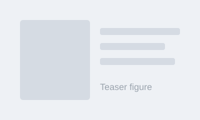

Wentao Li 李文涛
Ph.D. Student · School of Software Engineering · Xi’an Jiaotong University
Research interests in computational pathology and medical vision-language models.
About
I am a ... at Institution, advised by Advisor Name. My research focuses on ...
Previously, I received my ... degree from ...
I am open to collaborations. Feel free to reach out by email.
News
- 2026.10 One paper accepted to Venue.
- 2026.09 News item.
- 2026.06 News item.
Publications
* Equal contribution · † Corresponding author

Preprints / Under Review
Projects
Education & Experience
-
2023 – Present
University Name, Ph.D. in ...
Advisor: Name -
2024.06 – 2024.12
Company / Institute, Research Intern
Topic: ... -
2019 – 2023
University Name, B.Eng. in ...
Awards & Service
- 2025 Award name
- 2024 Scholarship name
- Reviewer MICCAI, IEEE TMI, ...